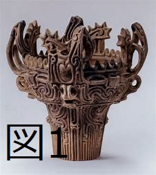
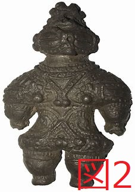
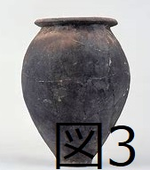
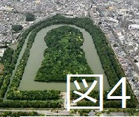
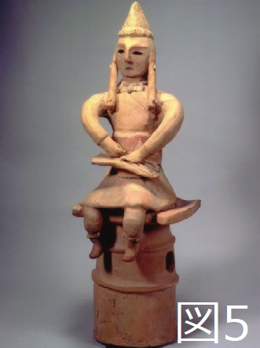
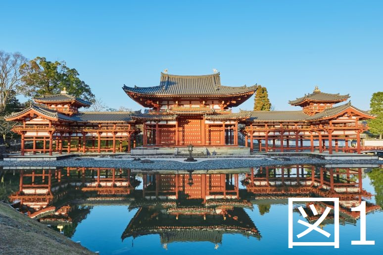

歴史の部屋
人類の出現と古代文明
問題をクリックすると答えが出てきます。
問題をタップすると答えがでてきます。
- 1. 約700年前に現れた、石などを道具として使うようになった最古の人類を何というか。
- ー 猿人
- 2. 約240万年前に現れた、火を使い、言葉を発達させた人類を何というか。
- ー 原人
- 3. 240万年前に現れた人類が、石を砕いて作った道具を何というか。
- ー 打製石器
- 4. 人類が、"3"の道具を使っていた時代を何というか。
- ー 旧石器時代
- 5. 20万年前に現れた、現代人の直接の祖先につながる人類を何というか。
- ー 新人
- 6. 日本で初めて打製石器が発見された遺跡を何というか。また、その遺跡は何県にあるか。
- ー 岩宿遺跡、群馬県
- 7. 約1万年前の人類が使用した、石を磨いて作った道具を何というか。
- ー 磨製石器
- 8. 人類が、"7"の道具を使っていた時代を何というか。
- ー 新石器時代
- 9. 紀元前3500年頃に、ティグリス川、ユーフラテス川流域で栄えた文明を何というか。また、その文明で使われた文字は何か。
- ー メソポタミア文明、くさび形文字
(補足)月の満ち欠けをもとにした暦の太陰暦、時間を計るための60進法、メソポタミア全域を統一したハンムラビ王も覚えましょう！ - 10. 紀元前3100年頃に、ナイル川流域で栄えた文明を何というか。また、その文明で使われた文字は何か。
- ー エジプト文明、神聖文字(象形文字)
(補足)王の墓であるピラミッド、1年を365日とする太陽暦も覚えましょう！ - 11. 紀元前2300年頃、インダス川流域で栄えた文明を何というか。また、その文明において計画的に建設された最大級の都市遺跡を何というか。
- ー インダス文明、モヘンジョ＝ダロ
(補足)インダス文字があったことも一応知っておきましょう！ - 12. 紀元前1600年頃、黄河流域の都市を統合して栄えた中国の王朝を何というか。また、その頃使われていた、漢字のもととなった文字を何というか。
- ー 殷(いん)、甲骨文字
- 13. 紀元前3世紀に、中国を統一した王朝を何というか。また、その王を何というか。
- ー 秦(しん)、始皇帝(しこうてい)
(補足)秦は中国文明の王朝の中でも最重要です！
まず、始皇帝は、各地で異なっていた貨幣・文字・物差し等を統一しました。
また、皇帝の呼び名を使い始め、北方の遊牧民の侵入を防ぐために、万里の長城を建設しました。 - 14. 13の王朝に続いてでき、約400年続いた王朝を何というか。また、その頃に整備された、ヨーロッパと結ぶ交通路を何というか。
- ー 漢、シルクロード
(補足)孔子の教えである儒教を取り入れた政治を行いました。
また、当時の日本にあった奴国(なこくorなのくに)と交流があったことでも知られています。 - 15. 紀元前8世紀頃のギリシャで多く生まれた都市国家を何と呼ぶか。
- ー ポリス
- 16. ギリシャのアテネで、紀元前5世紀に行われた政治を何というか。
- ー 民主政
(補足)民主政とは、市民が参加して決め事をする政治のやり方です。
しかし、この当時の民主政は、成人男性しか民会に参加する権利が与えられていませんでした。 - 17. ローマで、紀元前3世紀初め頃に行われた政治を何というか。また、その後、紀元前1世紀頃には、皇帝が治める政治に変わったが、その政治を何というか。
- ー 共和政、帝政
(補足)共和政とは、国王がおらず、国民が政治を行う方法です。帝政は名前のままですね。 - 18. 紀元前6世紀頃に生まれ、「人は皆平等で、悟りを開けば、誰でも苦しみから救われる」と説いた宗教は何か。また、その教えと説いた人物は誰か。
- ー 仏教、シャカ
(補足)仏教は、シルクロードを通って、中国や朝鮮・日本に伝わりました。
かつてはインドでも信仰されましたが、後にヒンドゥー教が信仰されるようになります。 - 19. 紀元前後の頃、ユダヤ教を批判することで生まれ、「神の前では皆平等であり、神を信じる者は誰でも救われる」と説いた宗教は何か。また、その教えを説いた人物は誰か。
- ー キリスト教、イエス
(補足)イエス自身もユダヤ人でありましたが、ユダヤ教の「ユダヤ人だけが救われる」という考えを批判しました。
その後、キリスト教はヨーロッパを中心に広がります。 - 20. 6世紀に生まれ、「唯一神の教えを伝え、神の前では人々は平等である」と説いた宗教は何か。また、その教えを説いた人物は誰か。
- ー イスラム教、ムハンマド
(補足)イスラム教は、アラビア半島(サウジアラビアの辺り)を中心に広がり、後に中央アジアや北アフリカに根付きました。
また、イスラム教の教えが書かれた経典をコーランといいます。
縄文～古墳時代
問題をクリックすると答えが出てきます。
問題をタップすると答えがでてきます。
    - 1. 上の図1のような土器を何というか。
- ー 縄文土器
- 2. 縄文時代の人々が生活していた、地面に穴を掘り屋根を付けた家を何というか。
- ー たて穴住居
- 3. 縄文時代の集落近くに見られるゴミ捨て場のことを何というか。
- ー 貝塚
(補足)貝塚には、石器や土器なども含まれており、当時の人々の生活を知る手がかりになっています。 - 4. 上の図2のような、縄文時代に作られた土の人形を何というか。
- ー 土偶
- 5. 青森県にある、縄文時代を代表とする遺跡を何というか。
- ー 三内丸山遺跡
- 6. 縄文時代の終わり頃、中国や朝鮮半島などから北九州へと渡来した人々があるものを伝えた結果、弥生時代では日本国内でムラやクニができ、争いが起こるようになった。その"あるもの"とは何か。
- ー 稲作
(補足)稲作以外にも青銅器や鉄器も伝えられました。 - 7. 上の図3のような土器を何というか。
- ー 弥生土器
- 8. 稲を作るために蓄えられた倉庫を何というか。
- ー 高床倉庫
- 9. 奴国の王が使いを送った中国の王朝は何か。
- ー 漢
(補足)奴国の王は漢から、漢委奴国王(かんのわのなのこくおう)と書かれた金印をもらったことで知られています。 - 10. 3世紀になり、倭(日本)の小さな国同士の争いを治めた女王は誰か。また、その女王の国を何というか。
- ー 卑弥呼、邪馬台国
- 11. 10の女王が使いを送った中国の王朝は何か。
- ー 魏
(補足)卑弥呼は魏から、金印や銅鏡をもらったことに加え、親魏倭王という称号をもらいました。 - 12. 佐賀県にある、弥生時代を代表する遺跡を何というか。
- ー 吉野ヶ里遺跡
(補足)吉野ヶ里遺跡は、柵や壕で囲まれていたり、矢が刺さった人骨が発見されていることから、当時の日本ではムラ同士の争いが盛んだったことが分かります。 - 13. 上の図4は大山古墳であるが、このような古墳の形状を何というか。
- ー 前方後円墳
(補足)古墳は、各地の豪族(富と権力を持った支配者)や大王の墓だと考えられています。 - 14. 古墳の周りに置かれた、図5のような土でできた人形を何というか。
- ー 埴輪
- 15. 古墳時代には、朝鮮半島は4つの国に分かれていたが、加羅以外の3つの国の名称を答えなさい。
- ー 高句麗(北部にあり最も大きい)、新羅(南東部)、百済(南西部)
(補足)日本は最南端に位置する加羅や百済に協力して、高句麗や新羅と戦いました。 - 16. 古墳時代に、日本の九州～東北地方南部までを統一した組織を何というか。また、その王を何というか。
- ー ヤマト王権(または、大和政権)、大王(おおきみ)
(補足)ヤマト王権は、朝鮮半島からの鉄の技術等を与えることで、各地の豪族を従わせていました。 - 17. 古墳時代に、中国や朝鮮半島から、倭国(日本)に移り住んできた人々を何というか。
- ー 渡来人
(補足)渡来人は、日本に漢字、仏教、須恵器(薄手の土器)、等を伝えました。
漢字が伝わったことで歴史書を作ることができ、仏教が伝わったことで飛鳥時代以降は仏教を重んじた政治を行うようになります。
飛鳥時代・奈良時代
問題をクリックすると答えが出てきます。
問題をタップすると答えがでてきます。
- 1. 聖徳太子は、額田部王女の代わりに政治を行ったが、このような役職を何というか。
- ー 摂政
(補足)摂政は、天皇が女性や子供の時に、代わりに政治を行う役職です。
また、額田部王女は、後の推古天皇です。 - 2. 聖徳太子が設けた、家柄にとらわれず、有能な人を役人に用いるための制度を何というか。
- ー 冠位十二階
- 3. 聖徳太子が設けた、仏教や儒教の考えを取り入れ作られた役人の心得を何というか。
- ー 十七条の憲法
(補足)憲法という名前ではありますが、現行の憲法とは違い日本全体への規則ではありません。
あくまで、役人、つまりお偉いさん方の中でのルールをまとめたものです。 - 4. 聖徳太子は、中国の政治の仕組みや進んだ文化を取り入れるため、小野妹子らを中国へと派遣された。この使節を何というか。
- ー 遣隋使
(補足)もちろん、聖徳太子が遣隋使を送ったという事実だけでも重要ですが、この当時の中国の王朝が隋であることを知る上でも重要になります。
少し難しい問題や入試問題等では、各時代の中国の王朝を聞いてくる問題が出題されることも少なくないので、聖徳太子の時代は、遣隋使を送っているのだから、中国の王朝は隋だ！ということも意識しておきましょう。 - 5. 聖徳太子が建てたとされる寺院は何か。
- ー 法隆寺
(補足)法隆寺は、現存する世界最古の木造建築としても有名です。この「世界最古の木造建築」という言葉は、法隆寺を解答させる問題でよく見られるので、なるべく覚えておきましょう。 - 6. 5の寺院に代表される、聖徳太子の頃の日本最初の仏教文化を何というか。
- ー 飛鳥文化
- 7. 聖徳太子の死後に権力を独占していた蘇我氏を倒して、天皇中心の国家を目指した政治改革を何というか。また、この改革を推し進めた代表人物を2人答えよ。
- ー 大化の改新、中大兄皇子(なかのおおえのおうじ)、中臣鎌足
(補足)大化の改新は645年に起こりました。「蘇我氏むし殺し」という語呂があります。「むしこ」の部分が「645」になっています。
この年号を覚えておくと、聖徳太子の死んだ時期がおおよそ分かるようになり、聖徳太子が行ったことは全て645年以前の出来事であると時系列を把握するのにも大活躍しますので、必ず覚えておきましょう！
ちなみに、中大兄皇子は後に天智(てんじ)天皇になり、中臣鎌足は藤原鎌足となります。余談ですが、藤原鎌足の子孫が平安時代の顔ともいえる藤原道長・頼通だったりします。 - 8. 朝鮮半島で、唐と新羅によって攻め込まれた百済を助けるために倭国(日本)は大軍を送るも敗れてしまった戦いを何というか。
- ー 白村江の戦い
(補足)この戦いの結果、朝鮮半島は新羅が統一しました。また、倭国は唐や新羅が攻めてくるのに備えて、太宰府等を作ります。 - 9. 672年に起きた、天智天皇の跡継ぎをめぐる戦いを何というか。また、この戦いに勝利して即位した天皇の名称を答えなさい。
- ー 壬申の乱、天武天皇
(補足)ここまで登場した重要な天皇は天智天皇、天武天皇の2人です。
大化の改新を行い戸籍を作った天智天皇、壬申の乱に勝利し即位した天武天皇。
あとは、この辺りの時代だけで言えば、聖武天皇と桓武天皇も重要な天皇なので、出てきた時には4人まとめてしっかり覚えましょう。 - 10. 7世紀～9世紀にかけて、中国の政治の仕組みや進んだ文化を取り入れるために派遣された使節を何というか。
- ー 遣唐使
- 11. 701年に作られた、律令国家のしくみを定めたものを何というか。
- ー 大宝律令
(補足)律は刑罰のきまり、令は政治のきまりのことです。
また、私(HP制作者)はバカなので、この701年を「平城京の逆」という知性の欠片もない覚え方をしています。平城京は710年なので、0と1が逆ですよね。
大宝律令がいつ作られたのかは、歴史の流れの中でも少しふわっとしていて分かりにくいので、年号を覚えておくと便利だったりします。 - 12. 律令国家のしくみが完成したことによりできた中央政府を何というか。
- ー 朝廷
(補足)朝廷という言葉は分かりにくいので、朝廷とは天皇のことくらいの認識でも大丈夫ですよ。
ちなみにここでは、地方は国・郡・里に分けられ、中央から国司が派遣されたり、各地方で郡司や里長も任命されました。 - 13. 710年に移された都を何というか。
- ー 平城京
(補足)平城京は奈良に建てられたので、ここからの時代を奈良時代といいます。
平城京の710年は、なんと綺麗な平城京で覚えられます。「なんと」の部分が「710」ですね。
普通に覚えるのが嫌な人は納豆ネバネバ平城京でも何でもいいので覚えましょう。
710年に平城京と覚えるだけで、奈良時代の始まる時期が分かるようになるので便利です。
平城京は唐の長安を手本に作られたというのも、たまに出題されるのでなるべく覚えておきましょう。 - 14. 6年ごとに作成される戸籍に基づき、人々に農業をするための土地を与える制度を何というか。
- ー 班田収授法
(補足)与えられた土地を口分田といい、口分田を与えられた農民には税が課せられました。
後に、貸し与える土地がなくなったため、新たな制度が作られることとなります。※16番の問題を参照 - 15. 奈良時代に作られた税のうち、稲の収穫の3％を納めるものを何というか。また、特産物を納めるもの、布を納めるものをそれぞれ何というか。
- ー 租、調、庸
(補足)この他にも、国の守りにつく兵役や、建設・土木工事等の労役もありました。
特に、九州の警備につく兵役である防人(さきもり)は出題されることが多いので、必ず覚えておきましょう！ - 16. 743年に定められた、新たな開墾地の永久私有を認めた制度を何というか。
- ー 墾田永年私財法
(補足)人口増加等により口分田が不足してきたので、新たな田んぼを作らせるためにできた制度です。
この制度ができた結果、貴族や寺社が私有地(後に荘園と呼ばれる)を独占するようになっていきます。
そして、天皇よりも貴族に力が集中したので、平安時代に入ると貴族の藤原氏が政治を独占し始めるわけです。 - 17. 奈良時代に栄えた、遣唐使などによって中国からもたらされた国際的な影響を強く受けた文化を何というか。また、その文化が最も栄えた頃の天皇の名称を答えなさい。
- ー 天平文化、聖武天皇
- 18. 遣唐使が持ち帰った宝物などを収めた倉庫を何というか。
- ー 正倉院
(補足)正倉院は、木材を組み合わせて造られる校倉造(あぜくらづくり)が使われています。 - 19. 17の天皇が、行基などの僧侶の協力のもと、都に建てた寺院を何というか。
- ー 東大寺
(補足)東大寺は奈良の大仏で有名なお寺です。奈良の大仏というだけあって、東大寺は奈良時代に建てられたことがよく分かりますね。
都に造られた東大寺に対して、地方には国分寺・国分尼寺が建てられました。
国分寺は男性用、国分尼寺は女性用のお寺になっています。 - 20. 度重なる日本への渡航の失敗によって失明しても諦めず挑戦し続け、日本にやってきた唐の僧侶は誰か。
- ー 鑑真
(補足)鑑真が建てたお寺が唐招提寺(とうしょうだいじ)です。出題されることはほとんどないかと思いますが、余裕があれば覚えておきましょう。 - 21. 奈良時代に書かれた歴史書を2つ答えなさい。
- ー 古事記、日本書紀
(補足)古事記と日本書紀で「記」と「紀」の漢字が異なる点にはよく注意しておきましょう！ここは漢字ミスが多発します。 - 22. 国ごとの産物や地名の由来、伝承などをまとめた地理書を何というか。
- ー 風土記(ふどき)
- 23. 大伴家持らがまとめたとされる、日本最古の歌集を何というか。
- ー 万葉集
(補足)この辺の時代では、各時代に1つずつ歌集ができています。奈良時代の万葉集。平安時代の古今和歌集。鎌倉時代の新古今和歌集。
これらの歌集が何時代に作られたのかは多くの学生を悩ませるはずなので、各時代に1つずつ作られたということを意識しておくと覚えやすいでしょう。
また、ひらがなができるのは平安時代であるため、奈良時代に作られた万葉集では万葉がなと呼ばれる漢字を使った当て字で書かれています。そこも意識しておくと、万葉集は平安時代になる前、つまり奈良時代に作られたんだ！と覚えるポイントになるかもしれません。
平安時代
問題をクリックすると答えが出てきます。
問題をタップすると答えがでてきます。
-

- 1. 794年に移された都を何というか。また、そのときの天皇の名称を答えなさい。
- ー 平安京、桓武天皇
(補足)794年の年号は鳴くよウグイス平安京で覚えられます。「なくよ」の部分が「794」になっていますね。
ここからの400年間が平安時代となるので、平安時代が始まるのが794年だと知る手がかりになります。なので、必ず覚えておいてください！ - 2. 平安時代の初めには、東北地方北部には、律令国家の支配が及ばない人々が住んでいた。そのような人々を何というか。
- ー 蝦夷(えみし)
(補足)古墳時代のヤマト王権のときに、東北地方南部までを統一したと出ていましたね。あれから平安時代になるまでの間、東北地方北部は日本の支配下に入っていませんでした。 - 3. 2の東北地方の北部に住んでいた人々を倒すために作られた官職を何というか。また、その官職に就き、東北地方の統一を果たした将軍は誰か。
- ー 征夷大将軍、坂上田村麻呂
(補足)征夷大将軍は「蝦夷を征圧する大将軍」とそのままの名前ですね。ただし、後に征夷大将軍は蝦夷とは全く関係なく、武士の頭、つまりボスを表す言葉として出てきます。同じ言葉ですが、意味が大きく異なるので注意しましょう。
また、朝廷側の坂上田村麻呂に対し、蝦夷側の指導者としてアテルイという人がいました。入試などで出てくるのか怪しいレベルの人物名ですが、余裕があれば覚えておくのも良いでしょう。 - 4. 藤原氏が行った、天皇が幼いときには摂政となり、天皇が成人後は関白となることで独占した政治を何というか。
- ー 摂関政治
(補足)摂政は天皇が女性や子供の時に代わりに政治を行う役職で、関白は天皇が成人後に天皇を補佐する役職です。つまり、藤原氏は天皇が子供のときから成人後もずっと天皇の代わりに政治を行っていたわけですね。
これを実現するために、藤原氏は自分の娘を天皇の后として、生まれた子供を天皇にしました。 - 5. 4の政治は11世紀頃に最も栄えるが、この頃政治を行っていた代表的な藤原氏は誰か。2人答えなさい。
- ー 藤原道長・藤原頼通
(補足)摂関政治といえば、この2人です。しかし、この2人は摂関政治を行った人物として以外の出題パターンもあるので、そちらもしっかりと押さえておきましょう。
まず、道長は「この世をば 我が世とぞ思ふ 望月の欠けたることも なしと思へば」という歌を歌っていることで有名です。内容的には「この世は俺のためにあるんやでぇ！満月が欠けていないみたいに完璧な人生やぁ！」といった感じです。
続いて頼通ですが、頼通については後ほど問題で出てきたときに説明します。ここでは、頼通の通という漢字が道長とは異なることに注意しておきましょう。 - 6. 894年、菅原道真の提案により何が行われたか。また、それにより生まれた文化を何というか。
- ー 遣唐使の停止(遣唐使を止めたという内容ならばOK)、国風文化
(補足)中国の唐が衰退していることを見通した菅原道真により、遣唐使は止められました。実際10世紀後半には、宋という新たな王朝に変わっています。ちなみに同時期の朝鮮半島でも、高麗という国に変わっています。
そして、遣唐使を停止したため、これまでのような中国を参考にした国づくりが行えなくなりました。その結果、日本独自の文化である国風文化が生まれました。
遣唐使の停止 → 国風文化 の流れは非常に重要なので、しっかりと覚えておきましょう！
ここからは余談です。菅原道真は優秀な人でしたが、優秀すぎたために藤原氏から嫌われてしまいます。その結果、藤原氏に無実の罪を着せられ、九州の太宰府に左遷されてしまいます。だから、太宰府では学問の神様として菅原道真がまつられているんですね。 - 7. 平安時代に貴族の住居に用いられた建築様式を何というか。
- ー 寝殿造(しんでんづくり)
- 8. 平安時代に生まれた日本固有の文字を何というか。
- ー 仮名文字
(補足)仮名文字とはひらがなやカタカナのことです。これこそ国風文化最大の功績です。後の問題に続きますが、平安時代には仮名文字で書かれた本も登場します。 - 9. 紫式部により書かれた長編小説は何か。また、清少納言により書かれた随筆は何か。
- ー 源氏物語、枕草子
(補足)どちらも仮名文字により書かれました。 - 10. 紀貫之らにより編集された歌集は何か。
- ー 古今和歌集
(補足)奈良時代の万葉集、平安時代の古今和歌集、鎌倉時代の新古今和歌集。各時代に1つずつ和歌集が作られたことを再度確認しておきましょう。 - 11. 比叡山に延暦寺を建てた人物は誰か。また、その人物がもたらした新たな仏教は何か。
- ー 最澄(さいちょう)、天台宗
(補足)天台宗の最澄は略して「天才」と覚えられます。この問題のように、建てたお寺から答えさせる問題は少し難しい問題で、ほとんどの問題では「最澄がもたらし仏教は何？」といったように、「天才」と覚えておくことで簡単に分かるようになります。 - 12. 高野山に金剛峯寺を建てた人物は誰か。また、その人物がもたらした新たな仏教は何か。
- ー 空海、真言宗
(補足)真言宗の空海は略して「真空」と覚えられます。「天才」のときと同じように、「真空」と覚えておけばほとんどの問題が解けるようになります。 - 13. 11世紀半ば頃から広まった、死語に極楽浄土に生まれ変わることを願う信仰を何というか。
- ー 浄土信仰
- 14. 上の図1の建物の名称を答えなさい。また、その建物を建てた人物は誰か。
- ー 平等院鳳凰堂、藤原頼通
(補足)藤原頼通は摂関政治よりも、平等院鳳凰堂を建てた人物として問題で採り上げられることが多いです。だから、こちらの方をより重点的に覚えておきましょう。
ちなみに平等院鳳凰堂は頼通が浄土信仰していたため建てられました。 - 15. 10世紀半ばに、関東地方、瀬戸内地方でそれぞれ武士による反乱が起こった。それぞれの反乱を起こした人物名を答えなさい。
- ー (関東地方)平将門、(瀬戸内)藤原純友
- 16. 11世紀半ばに東北地方を統一し、平泉(岩手県)を中心に勢力を振るったのは誰か。
- ー 奥州藤原氏
(補足)奥州藤原氏は、藤原道長等の藤原氏とは関係ありません。マイナーな人物なように思われがちですが、平泉に建てた中尊寺金色堂や、平氏を滅ぼした後の源義経をかくまったため滅ぼされたことなどで、意外と問題で出題されることも多いです。しっかり覚えておきましょう。 - 17. 11世紀後半から始まった、天皇の位を譲って上皇となってからも行った政治を何というか。
- ー 院政
(補足)院政が始まったのは藤原氏が行った摂関政治対策と考えられています。天皇が摂関政治で藤原氏の言いなりになるのであれば、天皇より上の位の上皇を作ってしまおうという考えですね。
ここを押さえておけば、院政は摂関政治の後に始まったことが分かりますね。平安時代は約400年と長いので、平安時代に起こった出来事として覚えるだけでなく、時系列はしっかりと捉えておきたいところです。
しかし、皮肉にも今度は上皇の言いなりになるので、天皇自身は政治の実権を取り戻せていません。後ほど、これが原因でトラブルが起こります。 - 18. 12世紀半ばに、後白河天皇と上皇の間で起こった争いを何というか。
- ー 保元の乱
この戦いで後白河天皇が勝利したため、天皇が政治の実権を取り戻すことに成功します。また、この戦いでは、源義朝と平清盛が天皇に協力していたため、力を伸ばすことになります。 - 19. 18の戦いの後、源氏と平氏の間で起こった争いを何というか。
- ー 平治の乱
(補足)名前の通り、平氏が治める、つまり平氏が勝利した戦いです。この戦いに勝利したことで源氏は勢力を弱め、平氏が大きく勢力を伸ばすことになります。 - 20. 武士として初めて太政大臣となり、政治の実権を握ったのは誰か。
- ー 平清盛
(補足)太政大臣とは、いわば内閣総理大臣のようなものです。これより武士が政治と関わる時代が始まりました。
平清盛が太政大臣に任命されたのは、保元の乱と平治の乱の功績あってのことです。これを理解しておくと、摂関政治 → 院政 → 保元・平治の乱 → 平清盛が太政大臣に就任が一連の流れの中にあることが分かりますね。個々の用語を覚えるのではなく、このように歴史を流れとして捉えておくと長期的に忘れにくく、応用問題にも対応できるようになります。 - 21. 平清盛が大和田泊(現在の神戸)の港を修築し、中国と行った貿易を何というか。
- ー 日宋貿易
唐が滅びた後の中国の王朝宋との間で行われた貿易です。これを覚えておけば、平清盛が活躍してた頃の中国の王朝が宋であることが分かりますね。
(平安時代の終わりから鎌倉時代までの簡単な解説)
政治を独占する平清盛を倒すよう、天皇から号令がかかります。そこで、源氏の長である源頼朝は弟の義経に命を出し平氏を滅ぼします。
その後、功績を手にした義経を許せず、義経を倒しにいくわけですが、そのとき義経をかくまった奥州藤原氏も同時に滅ぼされます。
こうして、無事平氏と義経を倒した源頼朝は天皇から征夷大将軍に任命され、鎌倉幕府を開きます。